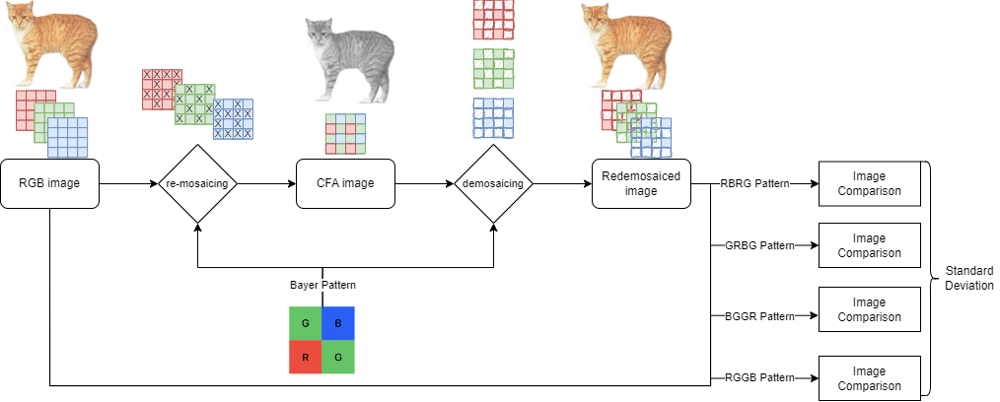

Image forensics · signal processing · no training required
A camera leaves a fingerprint in every pixel. A generator doesn't.
Almost every camera sensor sees one colour per pixel through a Bayer filter and interpolates the other two. That interpolation leaves a faint, regular structure in the finished photograph. An image from Stable Diffusion or Midjourney never went through a sensor, so it has no such structure. We built a detector on nothing but that fact: re-mosaic the image under each of the four possible Bayer layouts, demosaic it again, and measure how much the four results disagree. Camera photographs disagree; generated images don't. On 46,000 generated images the spread separated fake from real with 97–100% accuracy — and the same test showed exactly why it stops working the moment a photo is JPEG-compressed or resized.
The test, running in your browser
The project's method, reimplemented in JavaScript and checked pixel-for-pixel against the team's PyTorch code. The image starts as a genuine Stable Diffusion output. Push it through a simulated camera and the four Bayer patterns stop agreeing; then compress or shrink it and watch the evidence disappear. Your own photo never leaves this page.
Image under test
Where the re-demosaic disagrees (|difference| × 30)
Source: —
Click a pattern to see its difference map and its mosaic. Scale 20–60 dB; the best-fitting pattern is highlighted.
What the sensor keeps
12 × 8 pixels from the centre, one colour each, under the selected pattern.
Processed locally, never uploaded. A 640 × 400 centre crop at native resolution — cropping keeps the pattern, scaling would destroy it. Expect a phone JPEG to read as “fake”: that's the limitation, and it's real.
The marker is this image. Behind it: RAISE-1k camera photographs and DiffusionDB images from the project's results; dashed lines are the 5th and 95th percentiles of the real set.
The simulated camera is a small one — an optical low-pass filter, Bayer sampling with sensor noise, Malvar interpolation, then the chroma smoothing, saturation and sharpening every camera applies — and it lands where the RAISE photographs land: a spread of about 1.4 dB, with RGGB and BGGR scoring together above GRBG and GBRG, exactly the pairing the paper noticed. Without the chroma processing the correct pattern is reproduced almost perfectly and the spread balloons to 7 dB; real cameras don't do that. JPEG at quality 75 collapses the spread to roughly 0.07 dB, the same figure the real data gives.
The idea
Detectors for AI-generated images are usually classifiers: train a network on real and generated images, hope it learns something that transfers. Mostly it doesn't — a model trained on one generator's output tends to fail on the next generator's, because what it learned was that generator's quirks. We wanted a test that depends on a property of cameras rather than a property of generators, so that it would apply to a generator nobody had seen yet.
The property is the colour filter array. A single-sensor camera can't measure red, green and blue at the same photosite, so it lays a mosaic of colour filters over the sensor — overwhelmingly the Bayer pattern, two greens for every red and blue — and reconstructs the two missing colours at each pixel by interpolating from its neighbours. That step is demosaicing, and it is the origin of every finished photograph. The interpolated values are correlated with their neighbours in a way that depends on which of the four Bayer layouts the sensor used: RGGB, BGGR, GRBG or GBRG.

So the test is: pretend the image is a sensor readout. Throw away two of the three colours at each pixel according to pattern P, interpolate them back with the same kind of algorithm a camera uses, and compare the result with the image you started with. If the image really did come from a sensor with layout P, the interpolation largely reproduces what the camera did and the difference is small. Under the three wrong layouts it is larger. If the image never came from a sensor, all four layouts are equally wrong and the four differences are nearly identical. The statistic we kept is the standard deviation of the four PSNR values: large for a photograph, close to zero for a generated image.
What we found in the numbers before we found the result
The obvious version of the test — pick the pattern with the best score and check whether it wins by a margin — was the first thing we tried and it was disappointing: the best pattern matched the camera's real layout only about 58% of the time. Looking at individual images explained it. The RGGB and BGGR scores were always close to each other, and so were GRBG and GBRG; the big gap was between the two groups. Which member of a group wins is nearly a coin flip, but the gap between groups is robust. Taking the standard deviation across all four values captures the gap without needing the winner to be right, and that is the version that worked.
Forty-seven thousand images, one axis
The spread of PSNR across the four patterns, per image, from the project's result files — 999 camera RAWs from RAISE, 1,000 Stable Diffusion images from DiffusionDB, 44,000 images from eight generators in GenImage, and 1,000 photoreal landscapes the team generated. Filled histograms are images as tested; outlines are the same RAISE photographs after JPEG compression or resizing. Log axis, because the two populations sit thirty-fold apart.
| Image set | images | median spread (dB) | at these thresholds |
|---|
At (0, 100) — accept anything inside the full range of the real images — a few dozen outliers in RAISE with almost no spread drag the lower threshold down to 0.026 dB and let most fakes through. Trim one percent from each tail and DiffusionDB detection goes from 35% to 100%, GenImage from 25% to 96%, at the cost of 2% of real photographs. That trade-off is Table I of the paper; the PSNR column is reproduced here to the digit from the raw per-image results.
What the numbers say
The separation is real and it's large. The median spread for a camera photograph was 1.01 dB; for DiffusionDB, GenImage and the team's own generated landscapes it was 0.032, 0.043 and 0.024 dB. With thresholds at the 5th and 95th percentiles of the real set, 100% of DiffusionDB, 100% of the landscapes and 97.3% of GenImage were flagged, while 90% of the real photographs were kept — by construction. GenImage is the honest number: eight generators, including GANs and Midjourney, none of which were used to tune anything. PSNR was the most effective of the metrics tried; SSIM and CIEDE2000 colour difference were close behind, and VMAF, a video metric the team also computed, did not separate the sets (0% of DiffusionDB detected).
| Percentile range | DiffusionDB PSNR · SSIM · ΔE | GenImage PSNR · SSIM · ΔE | Landscape PhotoReal PSNR · SSIM · ΔE | Real kept |
|---|---|---|---|---|
| (0, 100) | 0.35 · 0.16 · 0.06 | 0.25 · 0.27 · 0.06 | 0.57 · 0.15 · 0.01 | 100% |
| (1, 99) | 1.00 · 0.97 · 0.92 | 0.96 · 0.89 · 0.79 | 1.00 · 0.98 · 1.00 | 98% |
| (2, 98) | 1.00 · 0.99 · 0.98 | 0.96 · 0.93 · 0.90 | 1.00 · 0.99 · 1.00 | 96% |
| (3, 97) | 1.00 · 0.99 · 0.98 | 0.97 · 0.94 · 0.92 | 1.00 · 1.00 · 1.00 | 94% |
| (5, 95) | 1.00 · 0.99 · 0.99 | 0.97 · 0.95 · 0.94 | 1.00 · 1.00 · 1.00 | 90% |
| (10, 90) | 1.00 · 1.00 · 0.99 | 0.98 · 0.97 · 0.96 | 1.00 · 1.00 · 1.00 | 80% |
It breaks exactly where the paper says it does. The fingerprint lives in the relationship between a pixel and its immediate neighbours, and anything that rewrites those relationships erases it. JPEG at quality 75 — a normal export — dropped the median spread of the real photographs from 1.01 dB to 0.056 dB, well inside the generated range; at the (5, 95) thresholds only 3.6% of them still read as real. Quality 25 and downscaling by half or a quarter took that to 0%. Since nearly every image on the web has been compressed or resized at least once, the method as it stands is a test for camera-native files, not for social-media screenshots. The final presentation reports the same effect on the pattern-identification rate: 58% on the original files, 25–43% after compression.
The demosaicing algorithm you re-run with matters more than expected. We don't know what proprietary interpolation a given camera used, so the team repeated the experiment with three alternatives to Malvar–He–Cutler. Plain bilinear interpolation and OpenCV's edge-aware method still separated the sets, with a much smaller margin — a real median of 0.22 and 0.16 dB against 0.016 for DiffusionDB. Variable-number-of-gradients demosaicing gave 0.009 dB for both and detected 3% of the fakes: it treats every layout almost identically, so there is no spread to measure. The Malvar filters are linear and pattern-specific, which is exactly what makes the wrong pattern hurt.
| Demosaicing algorithm | RAISE-1k median spread | DiffusionDB median spread | DiffusionDB detected |
|---|---|---|---|
| Malvar–He–Cutler (2004) | 1.009 dB | 0.032 dB | 100% |
| Edge-aware (OpenCV) | 0.163 dB | 0.016 dB | 98% |
| Bilinear | 0.218 dB | 0.016 dB | 97% |
| Variable number of gradients | 0.009 dB | 0.008 dB | 3% |
Two things I'd want a reader to weigh. First, "real" here means one dataset from three Nikon bodies, supplied by the dataset as TIFFs developed from RAW; whether the 1 dB spread generalises to other manufacturers' pipelines was untested, and the final talk says so. Second, the thresholds are percentiles of that same real set, so the "real kept" column is a design choice, not a measurement. The measured quantity is the fake-detection rate at each choice, and it is the fake sets — 46,000 images from three datasets and eight different generators — that supply the evidence.
How it was built
The pipeline started as a MATLAB prototype — rgb2cfa, MATLAB's
demosaic, PSNR and SSIM on one RAISE image — to check that the idea produced
any signal at all, and was then rebuilt in Python for scale. The Malvar–He–Cutler
interpolation is four 5×5 linear filters (one of them used transposed); the team adapted the open-source
colour-demosaicing implementation into batched PyTorch convolutions with
reflection padding so that all four patterns of an image, and many images, could run on
a GPU at once, and tuned it until it matched the MATLAB output. PSNR, SSIM and CIEDE2000
were ported the same way from scikit-image; VMAF was run through FFmpeg. Results were
written per image as JSON — the four scores per metric, the best pattern, the spread —
and the analysis notebooks, the percentile thresholds and six trained classifiers
(logistic regression, SVM, random forest, k-NN, AdaBoost, a GMM) all read from those files.
A ResNet-50 trained directly on real-versus-fake served as the conventional baseline.
The JavaScript on this page reimplements the mosaic, the Malvar filters and PSNR from scratch; before publishing I verified it against the project's convention (mirror padding, half-up rounding) and it reproduces the Python output to the pixel. The histograms and every threshold accuracy on this page were recomputed from the shipped result files rather than copied from the paper.
Two talks
The milestone presentation from February, which teaches colour filter arrays and the Malvar filters from first principles, and the final presentation from April with the results.
The paper
Six pages, IEEE format. Open it in its own tab ↗
Everything, in its original form
The project code is bundled below: the MATLAB prototype, the PyTorch re-demosaicing and metric implementations, the batch pipeline, the analysis notebooks and the tests, with the team's README. Left out are the 100 MB of per-image result JSONs (the numbers on this page come from them) and the ChatGPT transcript the README refers to.
Credits
A four-person course project
Produced jointly with three team members, January to April 2024, with the work divided equally among the four. Yiming Cao is third author on the paper.
The demosaicing and metric code adapts the open-source colour-demosaicing and scikit-image implementations into batched PyTorch, as acknowledged in the repository. The in-browser test, the distribution figure and the recomputed tables on this page were built afterwards by Yiming Cao. The sample image is a Stable Diffusion output from DiffusionDB (CC0).
Built on
- H. S. Malvar, L.-W. He, R. Cutler. High-Quality Linear Interpolation for Demosaicing of Bayer-Patterned Color Images. ICASSP 2004.
- B. Bayer. Color Imaging Array. US Patent 3,971,065, 1976.
- D.-T. Dang-Nguyen et al. RAISE: A Raw Images Dataset for Digital Image Forensics. MMSys 2015.
- Z. J. Wang et al. DiffusionDB. 2023; M. Zhu et al. GenImage: A Million-Scale Benchmark for Detecting AI-Generated Image. 2023.
- Z. Wang, A. Bovik, H. Sheikh, E. Simoncelli. Image Quality Assessment: From Error Visibility to Structural Similarity. IEEE TIP 2004.